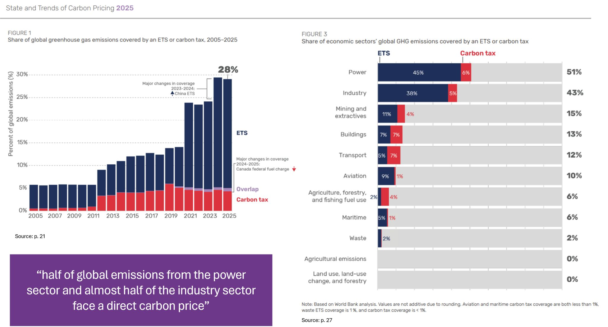

State and Trends of Carbon Pricing report - 2025 release
Published June 2025
The World Bank has released its annual State and Trends of Carbon Pricing report, with contributions from Climate Focus, Trinomics, International Carbon Action Partnership (ICAP) and Ecosystem Marketplace.

Some good highlights
Despite some setbacks, carbon pricing is still being implemented around the world, covering close to 1/3 of global emissions by now
Brazil, India, Türkiye are moving forward implementing their own ETS structures, with initial phase in Türkiye expected to commence in 2026 and the system expected to be operation in Brazil within 5 years
China has also expanded its national ETS coverage, with its system covering 51% of national emissions now, although the carbon price remains around $12, which is much lower than prices we see in other contexts (e.g., EU ~$70)
South Africa, accounting for about 1% of global emissions, despite some economic hardships, continues to have an carbon pricing instrument with exemplary coverage (82%), contributing about $100 million to public revenues
Some not so good highlights
International aviation (~ 3% of global emissions) and maritime traffic (~ 2%) is largely excluded from any pricing instruments (coverage is <1%); aviation is moving forward with CORSIA (see p52), but implementation will be up to national governments and cooperation between them
Coverage of North America is largely missing, there are some good examples on state (Washington, Oregon, California) and province levels (Alberta, Quebec, New Brunswick), but lacking national regulations these only cover limited parts of total emissions
Carbon pricing can still be politically controversial (see p23), a lot depends on the actual implementation and measures that target compensating vulnerable groups, the EU's Social Climate Fund is one example of how part of the revenues can be used for supporting people who might experience difficulties due to price pressures of carbon pricing or employment loss, but there are a lot of questions around distributional outcomes and attention need to be paid to avoid hurting vulnerable groups
Report is here: https://doi.org/10.1596/978-1-4648-2255-1, with the accompanying updated dashboard (and data) here: https://carbonpricingdashboard.worldbank.org/